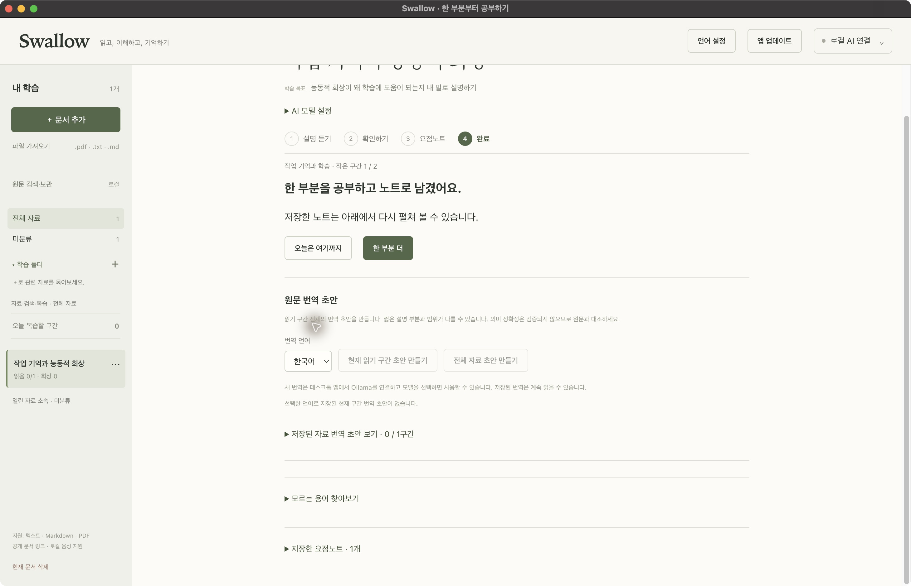
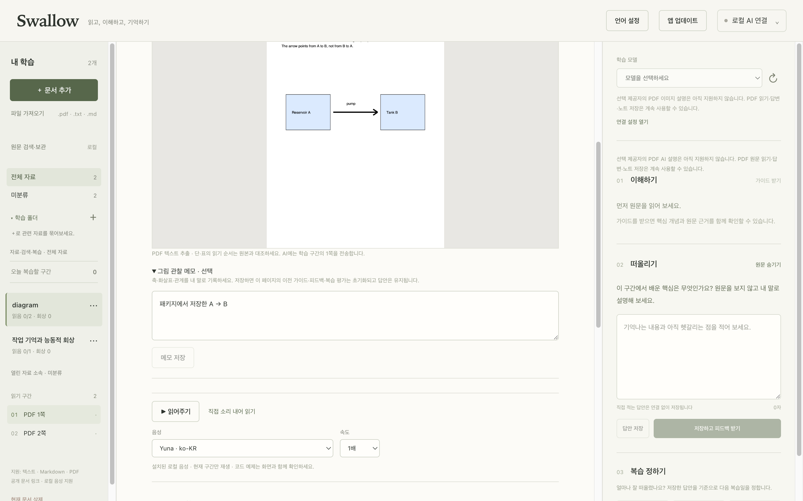
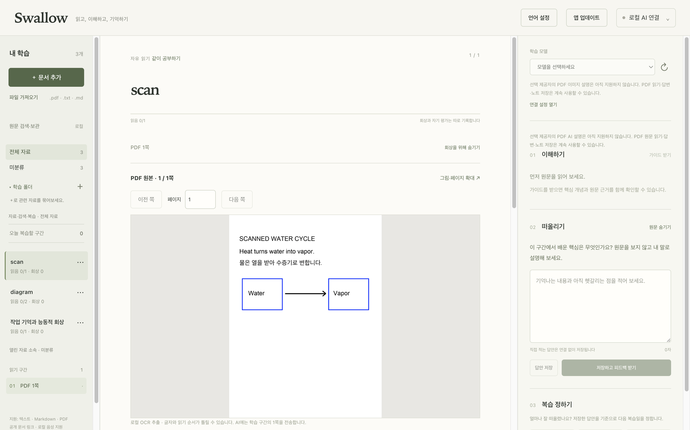

모든 기능 무료 · 오픈소스
읽어야 하는데,
눈에 들어오지 않을 때.
문서, 논문, 책.
시작이 어려운 날을 위한
작은 읽기 도구.
한 부분을 읽고, 내 말로 답하고, 노트와 복습까지.
회원가입 없이 무료로 시작하세요. AI가 필요하면 내 PC의 Ollama를 연결하면 됩니다.
Windows 11 · Intel/AMD x64 / macOS 15 이상 · Apple Silicon (M1 이후)
Windows 무서명 베타 · Mac Developer ID 미서명·미공증 미리보기. 지원 범위와 설치 안내

작게 시작하는 방법
처음부터 전부 이해하려고
애쓰지 않아도 괜찮아요.
한 부분만 읽어요.
가져온 원문을 작은 구간부터 읽습니다. 눈으로 읽기 어려운 날에는 로컬 음성으로 들어보세요.
내 말로 답해봐요.
읽은 내용을 떠올리고 한 가지 질문에 답합니다. 완벽한 문장보다, 내가 이해한 한 문장이면 됩니다.
요점노트를 남겨요.
답변과 요점을 기록하고 다시 펼쳐봅니다. 오늘은 여기까지, 다음에는 한 부분 더 이어가세요.
로그인이나 AI 연결 없이 첫 학습을 시작할 수 있어요.
읽던 자료 그대로
내 자료를 가져오면,
공부할 자리가 생깁니다.
텍스트·Markdown·PDF와 공개 문서 링크를 한곳에서 읽습니다. 원문 옆에 질문과 기록을 두고, 폴더와 검색으로 다시 찾으세요. 읽던 위치와 노트는 다음 학습으로 이어집니다.
- 모든 기능 무료
- 구독이나 결제 정보 없이 사용하세요. 자체 작성 코드와 문서는 MIT 라이선스로 공개합니다.
- 읽고, 듣고
- 원문 읽기와 OS의 로컬 음성. PDF 보기·메모와 스캔 문서의 한글·영문 OCR.
- 내 PC에 기록
- 원문·답변·요점노트를 기기에 저장합니다. AI 연결 없이도 읽기·답변·노트·복습을 이어갑니다.
- Ollama 로컬 AI
- 같은 PC의 텍스트 모델로 설명·용어 풀이·답변 피드백·번역 초안을 요청하세요. Swallow의 유료 AI 구독이나 외부 API 키는 필요 없습니다.
Ollama와 로컬 모델은 별도로 준비합니다. 지원 버전·모델 조건은 로컬 AI 안내를 확인하세요. 모델 다운로드·웹 문서 가져오기에는 인터넷이 필요하고, AI·OCR 결과는 원문과 대조해야 합니다. 자료는 앱 자체에서 암호화하지 않으므로 저장·백업 안내도 확인해 주세요.


원문 옆에서 생각을 이어가요.
그림과 도표가 있는 자료도 PDF 화면으로 확인합니다.


이미지 속 문장도 읽을 수 있게.
인식된 텍스트는 원문과 대조해 주세요. 문서 상태에 따라 오류가 생길 수 있어요.
Windows에서 시작하기
Windows 베타도
지금 무료로.
Windows 11 · Intel/AMD x64용 베타 1입니다.
Mac 사용자는 Mac 설치 안내로 이동하세요.
설치 관리자 없이 ZIP으로 실행
Windows ARM64·32비트는 지원 대상이 아닙니다. 실행에 Node.js·npm·별도 OCR 도구는 필요하지 않습니다.
- 공식 릴리스에서 앱 ZIP 받기
Assets의
Swallow-0.1.0-windows-x64-trial-unsigned.zip을 받으세요. Source code ZIP은 앱 설치 파일이 아닙니다. - ZIP 전체를 풀고 실행하기
체크섬을 확인한 뒤 전체를 압축 해제하고, Swallow 폴더의 Swallow.exe를 실행합니다. EXE만 따로 옮기지 마세요.
- 짧은 예제로 첫 학습 시작하기
로그인·AI 연결 없이 읽기 → 답변 → 요점노트를 진행합니다. 기존 기록이 있다면 앱을 종료한 뒤 데이터 폴더를 먼저 백업하세요.
코드 서명 없는 베타입니다.
자동 업데이트는 제공하지 않습니다. Windows 정책에 따라 실행이 제한될 수 있습니다. 한영 음성 재생 제어는 확인했지만 실제 스피커·헤드폰 청취는 아직 미확인입니다.
macOS 15 이상 · Apple Silicon
M1 이후 M 시리즈용입니다. Intel Mac용 설치본은 없습니다. 실제 확인 환경은 macOS 15.6.1 / M1 Pro입니다.
- 공식 릴리스에서 DMG 받기
Assets의
Swallow-0.1.0-macOS-arm64-unsigned.dmg를 받으세요. Source code ZIP은 설치 파일이 아닙니다. - 응용 프로그램 폴더로 복사하기
기존 앱은 ⌘Q로 종료하고 기록을 백업하세요. DMG를 열어 Swallow.app을 Applications 폴더로 드래그합니다.
- 디스크 이미지를 추출하고 실행하기
Finder에서 Swallow 디스크 이미지를 추출한 뒤, 응용 프로그램 폴더의 Swallow를 여세요. Node·npm·Xcode는 필요 없습니다.
Developer ID 서명·Apple 공증이 없습니다.
Apple이 개발자 신원이나 이 배포본의 악성코드 검사를 확인해 준 버전이 아닙니다. 출처를 확신할 수 없다면 설치를 중단하세요.
“개발자를 확인할 수 없음” 경고가 표시되나요?
공식 릴리스에서 받은 파일인지 확인하세요. 실행을 허용하려면 경고를 닫은 뒤 시스템 설정 → 개인정보 보호 및 보안 → 보안 → 그래도 열기에서 앱 이름이 Swallow인지 확인합니다. 다시 뜨는 창에서도 실행 여부를 직접 판단하세요. 관리되는 Mac에서는 허용이 제한될 수 있습니다.
Apple의 공식 앱 보안 안내 ↗“앱이 손상되었습니다”, “컴퓨터를 손상시킵니다” 또는 악성코드 발견 경고라면 실행을 중단하세요. 공식 릴리스에서 다시 받고 체크섬을 확인해 주세요. 계속되면 오류 문구와 macOS 버전을 이슈로 알려주세요.
다운로드한 파일 확인하기
같은 릴리스의 SHA256SUMS.txt도 같은 폴더에 받으세요. 기본 다운로드 폴더를 썼다면 터미널에서 아래 명령을 실행합니다.
cd ~/Downloads
shasum -a 256 -c SHA256SUMS.txtDMG 파일명 뒤에 OK가 나와야 합니다. 파일이 다르면 설치하지 마세요. 체크섬은 파일 일치 확인이며 Apple 공증을 대신하지 않습니다.
앞으로의 Swallow
더 많은 기기에서,
더 다양한 AI와.
Windows 베타와 Mac 미리보기로 시작합니다. 앞으로 iOS·Android로도 작은 시작을 이어갈 수 있도록 지원 범위를 넓혀가겠습니다.
- 플랫폼 확장
- iOS·Android를 플랫폼별 개발과 실행 검증을 거쳐 순차적으로 공개할 예정입니다.
- AI 연결 확장
- Ollama 외에도 ChatGPT 계정 로그인 기반 SDK 연결과 다른 AI 제공자 연결을 지원하는 버전을 준비할 예정입니다.
- 공개 안내
- 지원 범위·연결 방식·이용 조건과 데이터 전송 범위는 각 버전 공개 시 GitHub에서 안내하겠습니다.
현재는 Windows 11 x64 베타·macOS Apple Silicon 미리보기와 Ollama 로컬 AI 연결을 제공합니다. 모바일·추가 AI 연결은 향후 계획이며 공개 일정은 아직 확정되지 않았습니다.
오늘은 한 부분만
작은 시작을,
Swallow와 함께해요.
처음 읽기를 시작할 때, 어디에서 막혔나요?
사용해 보며 편했던 점과 어려웠던 점을 GitHub 이슈로 들려주세요.